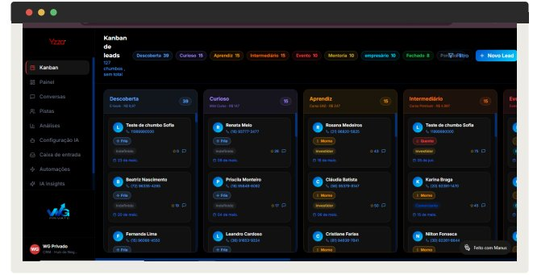

CRM
Estruturação e implantação de CRM, com a Yzza organizando cada lead automaticamente do primeiro contato até o pós-venda.
Ferramenta e método, não só planilha.
Montamos o funil de vendas, cadastramos as oportunidades e implantamos a plataforma de CRM, com rotina de acompanhamento pro time comercial não perder lead pelo caminho.
Yzza: a vendedora digital que nunca dorme
A Yzza, plataforma do nosso próprio ecossistema, é uma vendedora digital com IA que responde e qualifica leads 24 horas por dia, e organiza cada um automaticamente nas etapas do funil (Curioso, Negociação, Venda e Pós-venda), sem depender de alguém alimentar o CRM na mão. Ela ainda alimenta os dados de volta pro Meta e o Google, deixando os próprios anúncios mais inteligentes a cada ciclo.
Resultado que a gente prefere mostrar do que prometer.
Depois, com a Yzza organizando o funil, nenhum contato ficou esquecido em conversa parada no WhatsApp.
Ticket médio de R$ 323 mil por venda, com rastreamento confirmado em quase metade do volume fechado no período.